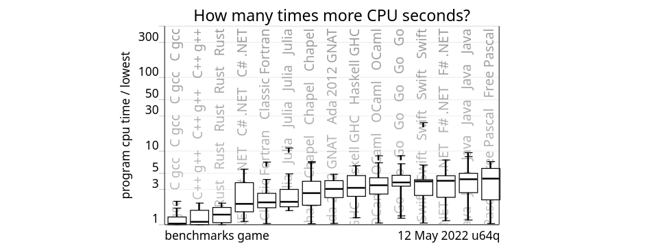
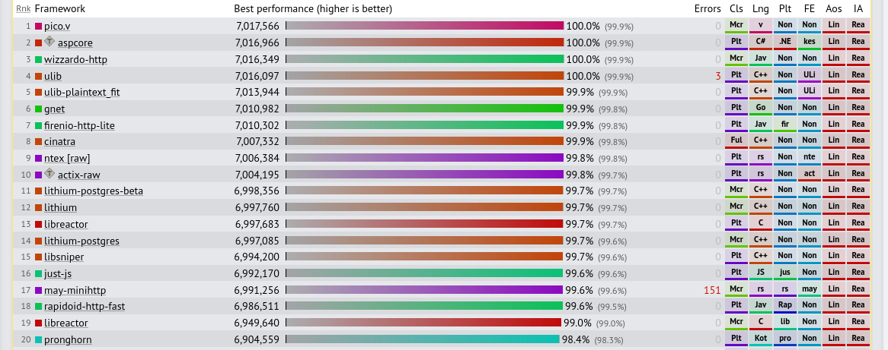
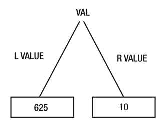
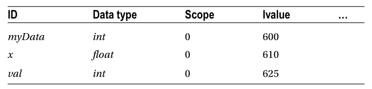

Introduction
★★☆☆☆ These notes need more examples to make the topic clear
Go is an open source programming language that makes it easy to build simple, reliable, and efficient software.
Go was released in 2019 and was designed by:
Go Features
- statically types
- compiled language
- fast compiler
- garbage collection (GC)
- concurrency support
- structural typing
- standard library
- it's a general purpose language
- amazing readability
- makes hard problems simple
- runs on Windows, Unix (like Linux, Mac) and Plan 9
Go in real life
Go is one of the fastest languages with a garbage collection and utilize less memory than most.

Also, Go is great for web development. A Few languages are faster than Go.

More benchmarks can be seen at this links:
The best source for more information about Go can be found at go.dev
Installation
Go installer can be downloaded from here, then follow the instructions present at the link or read the instructions below.
Windows installation
- Open the MSI file you downloaded and follow the prompts to install Go
- Verify that you've installed Go:
- In Windows, click the Start menu.
- In the menu's search box, type cmd, then press the Enter key.
- In the Command Prompt window that appears, type the following command:
go version
- Confirm that the command prints the installed version of Go.
Update Go on Windows
- Download again the latest version of the Go installer from here.
- Repeat the steps from Windows Installation
Linux installation
-
Open a terminal where you downloaded the Go installer.
-
Extract Go with:
tar -C /usr/local -xzf go1.18.3.linux-amd64.tar.gzIf you get errors, then run command with sudo:
sudo tar -C /usr/local -xzf go1.18.3.linux-amd64.tar.gz -
Add
/usr/local/go/binto the PATH environment variable.- open
~/.bashrcor~/.zshrc - add to the file the following:
export PATH=$PATH:/usr/local/go/bin - open
Update Go on Linux
-
Download again the latest version of the Go installer from here.
-
Open a terminal where you downloaded the Go installer and paste:
rm -rf /usr/local/go && tar -C /usr/local -xzf go1.18.3.linux-amd64.tar.gzIf you get errors, then run command with sudo:
sudo rm -rf /usr/local/go && tar -C /usr/local -xzf go1.18.3.linux-amd64.tar.gz
Mac installation
-
Open the package file you downloaded and follow the prompts to install Go.
The package installs the Go distribution to
/usr/local/go. The package should put the /usr/local/go/bin directory in your PATH environment variable. You may need to restart any open Terminal sessions for the change to take effect. -
Verify that you've installed Go by opening a command prompt and typing the following command:
go version -
Confirm that the command prints the installed version of Go.
Update Go on Mac
- Download again the latest version of the Go installer from here.
- Repeat the steps from Mac installation
Setup
Before writing Go code, a code editor is needed. Also, a good terminal setup is very helpful.
Code Editor
For writing Go code, there are two good code editors:
If you don't know which to choose, try both. Especially try the keyboard shortcuts and code snippets to have a feeling of which you prefer.
Terminal
When writing Go code, some commands or some output will need a terminal. If you use Goland this is less important but still it's a good idea to invest in a good terminal setup.
Here is a tutorial on how to setup oh-my-zsh and some plugins on Linux and Mac.
For Windows, the same setup can be achieved, but first WSL must be installed.
Hello World
Finally, let's write some Go code.
Hello World with module
-
Create a directory.
mkdir hello cd hello -
Enable dependency tracking
go mod init hello -
Open the folder in your code editor
-
Create a file
hello.gowith the following content:package main import "fmt" func main() { fmt.Println("Hello, World!") } -
Run the code.
go run . # Hello, World! -
We can also create an executable.
go build ./hello # Hello, World!go run ., runs the project without creating an executable. In the example abovego buildcreates the executablehellofor Unix andhello.exefor Windows. On Unix we run the executable at the terminal by typing./helloand on Windows we type.\hello.exe.
Hello World with GOPATH
This is the old way of writing Go code. If you are interested, here is a good tutorial.
How to read the example
package main
import (
"fmt"
)
func main() {
fmt.Println("Hello, World!")
}
-
package maindefines a standalone executable. It is known aspackage declaration, and every program must start with it. Packages are used to organize code. Packages create two types of programs:executablesandlibraries.The example showed is an executable because starts with
package main. Executable programs can run directly, like the.exeprograms on Windows. -
import "fmt"imports thefmtpackage from the standard library. Thefmtpackage is a library that contains collections of code packed underpackage "fmt". When importing a single package,importis always followed by double quotes that can hold a sequence of characters. Multiple packages can be imported by adding two parentheses:import ( "fmt" "log" )The package
fmtcontains this functions:func Errorf(format string, a ...any) error func Fprint(w io.Writer, a ...any) (n int, err error) func Fprintf(w io.Writer, format string, a ...any) (n int, err error) func Fprintln(w io.Writer, a ...any) (n int, err error) func Fscan(r io.Reader, a ...any) (n int, err error) func Fscanf(r io.Reader, format string, a ...any) (n int, err error) func Fscanln(r io.Reader, a ...any) (n int, err error) func Print(a ...any) (n int, err error) func Printf(format string, a ...any) (n int, err error) func Println(a ...any) (n int, err error) func Scan(a ...any) (n int, err error) func Scanf(format string, a ...any) (n int, err error) func Scanln(a ...any) (n int, err error) func Sprint(a ...any) string func Sprintf(format string, a ...any) string func Sprintln(a ...any) string func Sscan(str string, a ...any) (n int, err error) func Sscanf(str string, format string, a ...any) (n int, err error) func Sscanln(str string, a ...any) (n int, err error) type Formatter interface{ ... } type GoStringer interface{ ... } type ScanState interface{ ... } type Scanner interface{ ... } type State interface{ ... } type Stringer interface{ ... } -
func main()is the entry point of the executable. It is a function that gets called when the program is executed. -
Println()is another function, from thefmtpackage, that display the message at the terminal.
Comments
Comments are a great way for the developer to document the code. There are different types of comments. Comments are ignored by the compiler.
Single line comment
package main
import "fmt"
func main() {
// this is a single line comment
// the line below prints ciao.
// code must be readable with clear names
// in this case all these comments are not useful.
// they are shown just as an example
fmt.Println("Ciao")
}
Multi line comment
package main
import "fmt"
func main() {
/*
this is a multi line comment
the line below prints ciao.
code must be readable with clear names
in this case all these comments are not useful.
they are shown just as an example
*/
fmt.Println("Ciao")
}
Package comment
// Copyright 2009 The Go Authors. All rights reserved.
// Use of this source code is governed by a BSD-style
// license that can be found in the LICENSE file.
/*
Package fmt implements formatted I/O with functions analogous
to C's printf and scanf. The format 'verbs' are derived from C's but
are simpler.
Printing
The verbs:
General:
%v the value in a default format
when printing structs, the plus flag (%+v) adds field names
%#v a Go-syntax representation of the value
%T a Go-syntax representation of the type of the value
%% a literal percent sign; consumes no value
...
*/
package fmt
A package comment can be created with // or /**/.
The package comment bust be placed above the package declaration and is useful for documenting the code.
Documentation
Comments placed above functions or packages will be used as documentatio for tools like VS Code, Goland and
go doc.
Go commands
Use go help to retrieve the list of all Go commands.
Usage
go <command> [arguments]
Commands
bug start a bug report
build compile packages and dependencies
clean remove object files and cached files
doc show documentation for package or symbol
env print Go environment information
fix update packages to use new APIs
fmt gofmt (reformat) package sources
generate generate Go files by processing source
get add dependencies to current module and install them
install compile and install packages and dependencies
list list packages or modules
mod module maintenance
work workspace maintenance
run compile and run Go program
test test packages
tool run specified go tool
version print Go version
vet report likely mistakes in packages
Use
"go help <command>"for more information about a command.
Additional help topics
buildconstraint build constraints
buildmode build modes
c calling between Go and C
cache build and test caching
environment environment variables
filetype file types
go.mod the go.mod file
gopath GOPATH environment variable
gopath-get legacy GOPATH go get
goproxy module proxy protocol
importpath import path syntax
modules modules, module versions, and more
module-get module-aware go get
module-auth module authentication using go.sum
packages package lists and patterns
private configuration for downloading non-public code
testflag testing flags
testfunc testing functions
vcs controlling version control with GOVCS
Use
"go help <topic>"for more information about that topic.
For more information and examples, check this link.
Simple program
Go programs are made from packages. Here is a simple program with one package, that shows how to create a package, how to use it and how to test it's functionality.
The program has the following structure:
├── ciao
│ ├── ciao.go
│ └── ciao_test.go
├── go.mod
└── main.go
At the terminal type the following lines one by one:
cd # move into home directory
mkdir tutorial
cd tutorial
go mod init tutorial
Open in your code editor the tutorial folder, create the other files and copy the code for the files, listed below.
ciao/ciao.go
package ciao
import "fmt"
func Ciao(name string) string {
return fmt.Sprintf("Ciao %s", name)
}
ciao/ciao_test.go
package ciao
import "testing"
func TestCiao(t *testing.T) {
type args struct {
name string
}
tests := []struct {
name string
args args
want string
}{
{name: "Name", args: args{name: "Gopher"}, want: "Ciao Gopher"},
{name: "Emoji", args: args{name: "😀"}, want: "Ciao 😀"},
{name: "China", args: args{name: "普里騰"}, want: "Ciao 普里騰"},
}
for _, tt := range tests {
t.Run(tt.name, func(t *testing.T) {
if got := Ciao(tt.args.name); got != tt.want {
t.Errorf("Ciao() = %v, want %v", got, tt.want)
}
})
}
}
main.go
package main
import (
"fmt"
"tutorial/ciao"
)
func main() {
c := ciao.Ciao("Gopher")
fmt.Println(c)
}
Run project
go run .
# Ciao Gopher
Run Test
go test ./ciao
# ok tutorial/go/ciao 0.003s
The tests succeed because strings in Go are encoded as utf-8 by default. Knowing this, the tests are redundant but are shown as an example.
Variables
A variable is a name given to an address in memory that holds a value.
Define a variable
var val int64 = 10
A variable is defined with the word var followed by a name and type. val and int are the name and type chosen, for this example. The type tells
the compiler how much memory to ask the Operating System to reserve.
The variable val is made by to important values: lvalue and rvalue.

The val variable starts in memory at 625 and because it's an int will occupy 8 bytes on a 64-bit machine. So, the variable starts in memory at 625 and ends at 633.
The 10 represent the value that it stores at the 8 byte (int64) address and in a 64-bit machine is saved in this format:
0000 0000 0000 0000
0000 0000 0000 0000
0000 0000 0000 0000
0000 0000 0000 1010
lvalue and rvalue
lvalue: called left value or location value is the starting memory address at which a variable is stored. For example, an int is stored from memory address625.rvalue: is what is stored at thelvalue. In Go you can assume that thervaluewill have the default value of the type, which for int is0. In our example we assigned10for thervaluebut we can also define a variable without assigning a value.// val rvalue is 0 var val int64
define vs declare
define: variable exists in the symbolic table (compiler table of each variable of our program) and has alvaluedeclare: variable exists in the symbolic table but has nolvalue. Thelvaluerepresent the random bits that exist at the given time in the memory address at which the variable points.
In Go every variable is initialized with the default value of the type and there isn't the risk of a variable that is only declared and points to random bits in memory.
Multiple ways to define a variaable.
package main
func main() {
var age int // define without initialization
var age2 int = 42 // define with initialization
var age3, age4 int = 42, 1302 // define/init multiple vars at once
var age5 = 42 // type omitted, will be inferred
age6 := 42 // shorthand, only in func bodies, implicit type
const name = "Gopher" // value cannot be changed
}
intstorage capacity depends on what machine you have. On a 64-bit machineintstorage is 64 bits and on a 32-bit machineintstorage is 32 bits. There are alsoint64andint32but usuallyintis the type used more.
const vs var
The difference between constants and variables is that the variables value can be changed while constants value is defined once and cannot be changed after that.
Scope
When creating a Go entity like a variables or a function, the compiler assigns different attributes to the entity like its starting memory address. Another attribute assigned by the compiler to the entity is its scope.

The scope is a region of the program where a defined entity can exist.
Example
scope.go
package main
import (
"fmt"
"syntax/scope/hello"
)
var x string = "Hello from global scope"
func init() {
var a string = "Hello from block scope"
fmt.Println("scope.go", a)
fmt.Println("scope.go", x)
fmt.Println("scope.go", hello.X)
}
func main() {
var y string = "Hello from block scope"
fmt.Println("scope.go", x)
fmt.Println("scope.go", y)
// fmt.Println("scope.go" ,a) // error undefined, available only for init block
fmt.Println("scope.go", hello.X)
// fmt.Println("scope.go" ,hello.z) // error undefined, not available
}
scope2.go
package main
import "fmt"
func init() {
fmt.Println("scope2.go", x)
}
hello/hello.go
package hello
import "fmt"
// X is capitalized
// is available to main.go
var X string = "Hello from project scope"
// z is not capitalized
// z is not available to main.go
var z string = "Hello from package scope"
func init() {
fmt.Println("hello.go", z)
}
hello/hello2.go
package hello
import "fmt"
func init() {
fmt.Println("hello2.go", X) // from hello.go
fmt.Println("hello2.go", z) // from hello.go
}
Result:
hello.go Hello from package scope
hello2.go Hello from project scope
hello2.go Hello from package scope
scope.go Hello from block scope
scope.go Hello from global scope
scope.go Hello from project scope
scope2.go Hello from global scope
scope.go Hello from global scope
scope.go Hello from block scope
scope.go Hello from project scope
init()is a function that is triggered beforemain()starts but after the variables are defined.- a scope can be large or small, and his visibility is decided by capitalizing the first letter of an entity like
Xinhello.go
Block scope
func main() {
{
v := 1
{
fmt.Println(v)
{
fmt.Println(v)
}
}
fmt.Println(v)
}
}
1
1
1
Shadowing scope
v := "outer"
fmt.Println(v)
{
v := "inner"
fmt.Println(v)
{
fmt.Println(v)
}
}
{
fmt.Println(v)
}
fmt.Println(v)
outer
inner
inner
outer
outer
Data Types
Go has four categories of data types:
- Basic Types
- Aggregate Types
- Reference Types
- Interface Types
Basic Types
- numbers
- strings
- booleans
Aggregate Types
- arrays
- structs
Reference Types
- pointers
- slices
- maps
- functions
- channels